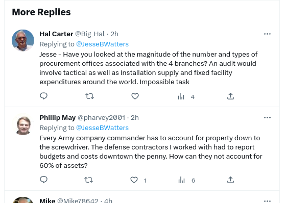
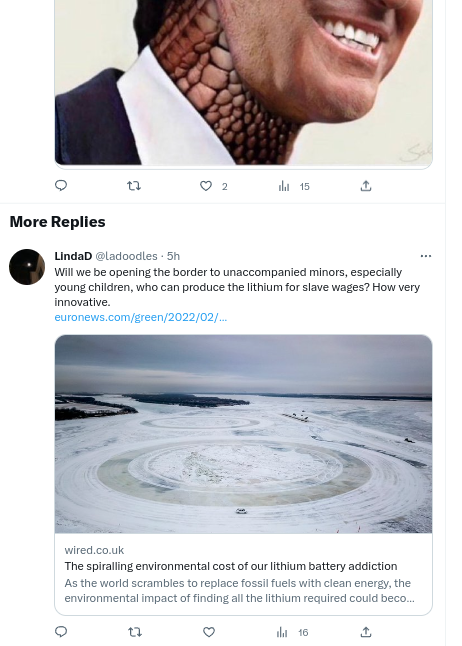

Twitter's ranking algorithm is beyond flawed
Twitter's ranking algorithm is irretrievably flawed when it comes to controversial topics like politics. That algorithm determines which tweets you see and in which order, and it consistently promotes low quality tweets while usually suppressing higher quality tweets.
For a tangible example, consider this from GovNedLamont/status/1643011987356393472:
That's on a cutesy thread where the governors of CT and CA wager on a sports game. Whether you agree with the last tweet in the image or not, you have to admit that it's higher quality than the tweets above. Yet, the Twitter ranking algorithm thinks the first three are better: it calls those "HighQuality" and the last tweet "LowQuality". In fact, the Twitter algorithm hid the last tweet: I had to click the 'Show more replies' link to see it.
Does that make any sense? Shouldn't the algorithm have ranked the last tweet above the other three?
If you look at reply threads you'll see this over and over. For instance, here are two "HighQuality" replies on GavinNewsom/status/1643066244982030339:

The first tweet has nothing to do with the Newsom tweet it's a reply to and I've seen that image dozens of times before. The last tweet is from a pro-Newsom activist and "human bot": he appears to be a real person but he never really says anything. Despite that, his replies are invariably near the top of Newsom's replies.
Here's another case from BrianDahleCA/status/1642989102051229696 (BrianDahleCA/status/1641590521297780736 is similar but has 100s of replies):
For an explanation, see "Adults led a pet goat to slaughter to teach girl a lesson. All she learned was cruelty | Opinion" ("The only authority figure who comes off looking decent in this whole affair is Republican state Sen. Brian Dahle, who bought the goat at auction and then agreed to let it live"). Whatever the facts of that matter, there are much more important things to hold Dahle accountable over. Yet, Twitter is preventing that by elevating goat-related replies above all others. That's like elevating dozens of "me too" comments above those with actual content.
To be clear, I only use Twitter to try to hold leaders accountable. If you use Twitter to discuss BTS or similar the ranking algorithm might work OK. The Youtube recommendation algorithm works fairly well for music and, even though Google is much (much, much) more technically competent than Twitter, Twitter might work OK if you're only there for music or sports.
However, politics and other controversial topics are a different beast. Twitter elevates those who tell others what they want to hear and who avoid challenging others. However, those who are in the habit of showing others wrong are likely to be blocked and reported, resulting in Twitter silencing them. Even Elon Musk admitted that blocks can be used to silence dissent, but, obviously, he hasn't done anything about that.
4/4/23: These are from the "AbusiveQuality" section on JenSiebelNewsom/status/1643446471348584448. That's the doubleplus censored section after 'show more replies'.
Apparently Twitter considers "good grief" to be a forbidden swear. Anyone who's so emotionally fragile that they need to be protected from such language should be institutionalized.
4/8/23: These are from the replies to ConwayShow/status/1644394938204057605; the tweet is an image of Egyptian hieroglyphics vs emojis, with the text "4000 years and we're back to the same language".
Twitter declares the first tweets in the image to be "HighQuality", but they call the last tweet "AbusiveQuality". Does that make sense to anyone? (The tooltips for the "O.J." emojis are "Hocho" and "Drop of blood", the one for the last is "Call me hand").
4/10/23: These are from the replies to RickCarusoLA/status/1580016999010553857 (from 10/12/22, "Angelenos need honest leaders who work together to solve big problems like crime, homelessness, and housing. Our city deserves better than more of the same from a fundamentally broken system.").
Unlike the other images, this was when not logged in.
Twitter declares the first two tweets in the image to be "HighQuality", but they call the last two tweets "LowQuality". Does that make sense?
4/10/23: The next two images are from the replies to JesseBWatters/status/1645578168995135489 ("We give our military almost a trillion dollars a year so where does it go? Well, the Pentagon has no idea. They told the IRS they couldn’t account for over 60% of their assets. Every single time the military gets audited, they fail with flying colors.").
Both were while logged in.
These replies are from the "HighQuality" section:
And, these replies are from the "LowQuality" section:

4/11/23: These are the first three replies to GavinNewsom/status/1645898328373116931 ("This is a serious moment in America's history. We're seeing an all out assault on civil rights, voting rights, LGBT rights, women's rights -- all the progress we have made in the last half century is being rolled back in state after state.").
This was while logged in.
Twitter calls these "HighQuality" and, since they're first, they're what Twitter thinks of as the highest quality replies. Not to repeat myself, but does that make sense to anyone?
4/11/23: This the first reply to IngrahamAngle/status/1645969226228793345 (while logged in). Agree or disagree, she's making a wonky point about economics.
Twitter thinks the highest-quality reply is a childish tweet that has nothing to do with her point. Does anyone think a childish ad hominem GIF is "HighQuality"?
4/12/23: These are the first three replies to CAgovernor/status/1645909108208586753 ("Americans want California’s gas price gouging law. 7 out of 10 voters nationwide support limiting oil company profits and requiring these companies to open their books – just like our new law to hold Big Oil accountable.", while logged in).
Twitter calls a childlike suggestion that Newsom resign and two people tweeting the same image "HighQuality".
4/13/23: These are the first three censored replies to MayorOfLA/status/1646599931921334272 ("Honored to join the @ClimateMayors Steering Committee as L.A. recommits to take bold action that centers jobs and climate justice for communities that have been impacted by climate change for too long. This group of city leaders is ready to advance a clean energy future for all.", while logged in).
The "HighQuality" replies aren't that bad, but one wonders what led Twitter to call these replies "LowQuality" (aside from Twitter's gross incompetence, of course).
4/16/23: These are from LAGalaxy/status/1647726507975139328 (announcing a goal by their cross-town rivals LAFC).
Can anyone from Twitter explain why some are called "HighQuality" and the others "LowQuality"?.
4/16/23: Of the three replies to ConwayShow/status/1647264805567496192 (a video-only tweet), two were called "HighQuality" and this one was called "LowQuality".
"Ding Dong" is Conway's signature saying.
4/17/23: These are the first two replies to CAgovernor/status/1648115085079093248 ("California has secured an emergency stockpile of Misoprostol to ensure people can access medication abortion in California regardless of what happens in the courts. We're protecting reproductive freedom.").
It's not unexpected but insulting nonetheless that Twitter thinks I'd be interested in a sockpuppet or a childish GIF.

4/18/23: From latimes/status/1648153402038267908 ("In her first State of the City speech, Mayor Karen Bass announced a dramatic expansion of her signature program to move homeless people indoors, while also pledging to transform the city into “a new L.A.”").
Interpreting why some of these replies are "HighQuality" and others are "LowQuality" - and the last just has one view (if Twitter can be believed) - is left as an exercise.
Note also that Elon Musk is censoring a paid blue check (not an uncommon occurence). If paid blue checks are promised they're sent to the top of the list, there might one day be a class action against Musk for fraud.
4/19/23: From CAgovernor/status/1648736610283044864 (".@CHP_HQ busted an organized retail theft crime ring targeting Home Depots across Southern California. Officers recovered $150,000 in stolen goods and arrested 3 suspects--all part of our ongoing effort to keep Californians and our businesses safe.").
While most of the replies correctly call Newsom on his pro-crime policies, this one seems to be from someone with industry experience. And, of course, Twitter censored it as "LowQuality".
4/20/23: From CAgovernor/status/1649100016781529088 ("California is poised to become one of the world’s largest producers of lithium. We’re building a hub for global innovation while ensuring this transformation benefits communities right here in Imperial Valley, where we're fast-tracking the world’s clean energy future.").
The "HighQuality" reply has no text, it's just a pointless, childish image I've seen dozens of times before. The "LowQuality" reply - agree or disagree - is on-topic and challenges Newsom on the downsides of what he's promoting.

4/21/23: From CAgovernor/status/1649555998498242560 ("The Supreme Court is right to take this action to protect access to medication abortion and put a hold on extreme judicial decisions. Medication abortion is available and accessible here in California and we will continue to fight to protect people’s freedom to choose.").
Agree with their sentiments or not, I think we can all agree that the "HighQuality" reply has no quality difference from the "LowQuality" reply.
4/22/23: From BrianDahleCA/status/1649471663933902848 ("Californians already pay energy rates that are up to 80 percent higher than the national average, and schemes like this will undoubtedly increase rates. Read more here ➡️ https://bit.ly/40vZKev. #FixCalifornia").
The Twitter censors are obsessed with goats, but aren't so keen on policy discussions.
4/24/23: This is flashback from a TheAthleticFC tweet about the World Cup from 11/28/22.
Other than the "FFS", there isn't much difference between the "HighQuality" and the "LowQuality" tweet, and I'm sure you can find dozens of examples of "FFS" in "HighQuality" tweets.

4/24/23: From GavinNewsom/status/1650634702271942656 ("North Dakota GOP have decided to force women to give birth. Even victims of rape. Meanwhile, they voted against providing school meals because child hunger isn't "the responsibility of the state." Mandating birth is state responsibility. Helping feed those kids is not. Got it.").
There are powerful arguments against Newsom's tweet, but the Twitter algorithm made this off-topic childishness the first replies.
4/24/23: From GavinNewsom/status/1651004674877845504 ("We're now at $175,000 and counting. Amazing. So close to $200,000. Let's hit huge numbers for POTUS. Every dollar makes a difference: [actblue link]").
While both are important, I'd say the censored reply is more important.
4/24/23: From SecondGentleman/status/1648115363412934673 ("When I visited Berlin’s Holocaust Memorial, I was overwhelmed thinking of the millions of lives lost. On Yom HaShoah, we rededicate ourselves to the fight against hate and the promise of Never Again.").
This is the first reply, thanks to the Twitter algorithm.